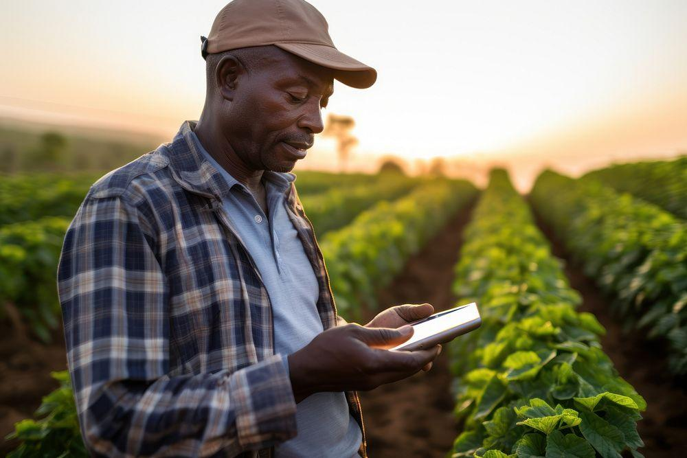
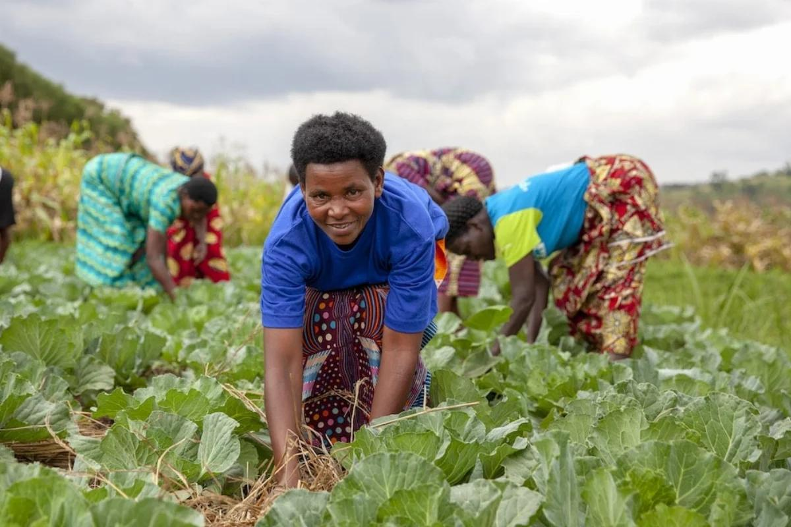
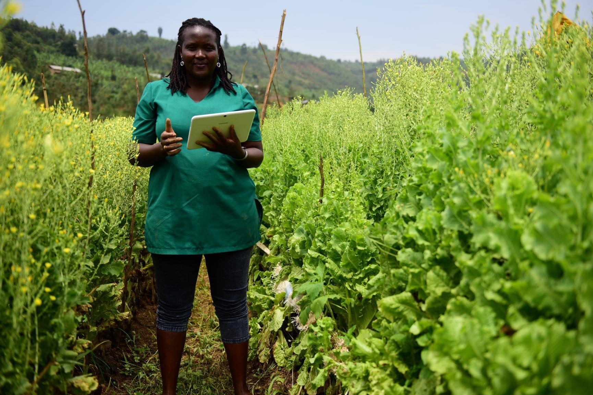
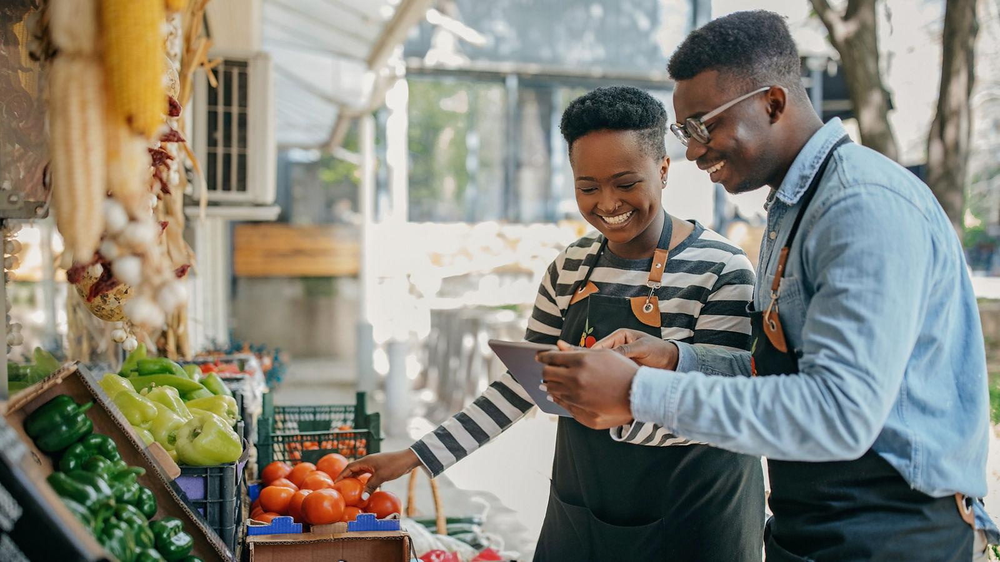
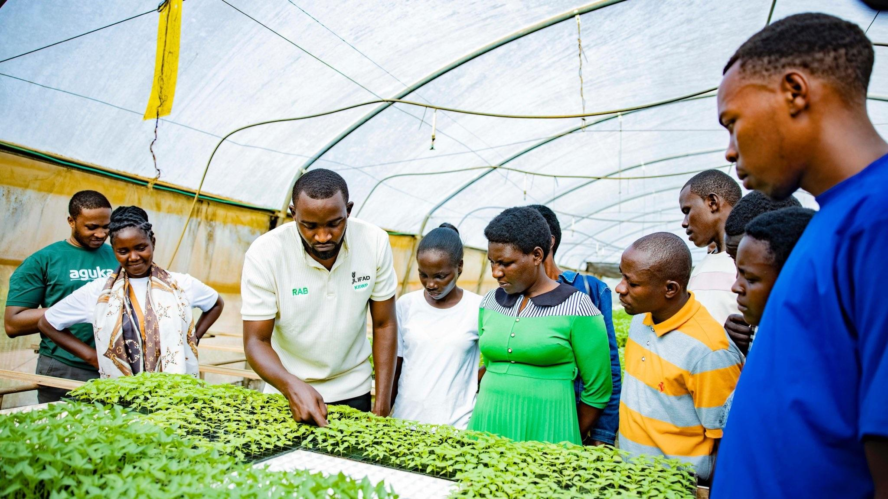

TECHNOLOGY
When farming meets technology
Discover how digital tools can help farmers explore crop information, plan their work, and make informed decisions.
Explore the storyGROWING FUTURES
Discover how agriculture, technology, and practical skills can help young people explore new pathways toward a brighter future.
Explore the stories
WHY STORYCAST?
Agriculture is more than growing crops. It can involve technology, business, innovation, marketing, and many other skills that young people can develop.
StoryCast explores these possibilities through accessible stories that encourage young people to learn, ask questions, and discover opportunities in their communities.
Learn about our mission
FEATURED STORY
What happens when a young person begins to see agriculture differently? Explore a fictional story about learning new skills, discovering agricultural technology, and considering the possibilities of starting a small business.
Listen to the storyEXPLORE MORE
Explore different ways agriculture, technology, and practical learning can create possibilities for young people.

TECHNOLOGY
Discover how digital tools can help farmers explore crop information, plan their work, and make informed decisions.
Explore the story
ENTREPRENEURSHIP
Learn about the possibilities in processing, packaging, selling, transporting, and marketing agricultural products.
Explore the story
SKILLS AND LEARNING
Explore how training, mentorship, and practical experience can help young people prepare for different opportunities.
Discover our missionYOUR NEXT CHAPTER
Start exploring new ideas about agriculture, technology, entrepreneurship, and the future of work.
Discover our mission